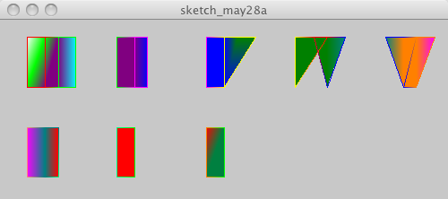

size(500, 200, P3D);
background(200);
beginShape(QUAD_STRIP);
stroke(255,0,0);vertex(30, 20);
fill(0,255,0);vertex(30, 75);
vertex(50, 20);
fill(128,0,128);vertex(50, 75);
stroke(0,255,0);vertex(65, 20);
vertex(65, 75);
fill(0,255,255);vertex(85, 20);
vertex(85, 75);
endShape();
beginShape(QUAD_STRIP);
fill(128,0,128);vertex(130, 20);
vertex(130, 75);
stroke(255,0,255);vertex(150, 20);
vertex(150, 75);
fill(0,0,255);vertex(165, 20);
vertex(165, 75);
stroke(255,0,255);vertex(185, 20);
endShape();
beginShape(QUAD_STRIP);
vertex(230, 20);
fill(0,0,255);vertex(230, 75);
stroke(255,255,0);vertex(250, 20);
vertex(250, 75);
fill(0,128,0);vertex(265, 20);
vertex(285, 20);
stroke(255,255,0);vertex(285, 75);
endShape();
beginShape(QUAD_STRIP);
vertex(330, 20);
vertex(330, 75);
stroke(255,0,0);vertex(350, 20);
vertex(365, 20);
stroke(0,0,255);vertex(365, 75);
fill(0,128,128);vertex(385, 20);
vertex(385, 75);
endShape();
beginShape(QUAD_STRIP);
vertex(430, 20);
fill(255,128,0);vertex(450, 20);
vertex(450, 75);
stroke(255,128,0);vertex(465, 20);
vertex(465, 75);
fill(255,0,255);vertex(485, 20);
stroke(255,128,128);vertex(485, 75);
endShape();
beginShape(QUAD_STRIP);
vertex(30, 120);
vertex(30, 175);
fill(0,128,128);stroke(0,128,128);vertex(50, 120);
vertex(50, 175);
fill(255,0,0);vertex(65, 120);
stroke(0,255,128);vertex(65, 175);
endShape();
beginShape(QUAD_STRIP);
vertex(130, 120);
vertex(130, 175);
stroke(0,255,0);vertex(150, 120);
vertex(150, 175);
stroke(255,128,0);vertex(165, 120);
endShape();
beginShape(QUAD_STRIP);
vertex(230, 120);
fill(0,128,64);vertex(230, 175);
stroke(0,255,0);vertex(250, 120);
vertex(250, 175);
endShape();
beginShape(QUAD_STRIP);
vertex(330, 120);
stroke(0,255,125);vertex(330, 175);
vertex(350, 120);
endShape();
beginShape(QUAD_STRIP);
fill(64,128,64);vertex(430, 120);
endShape();